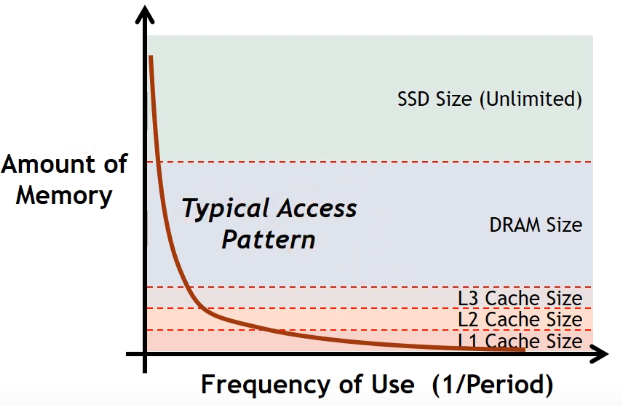
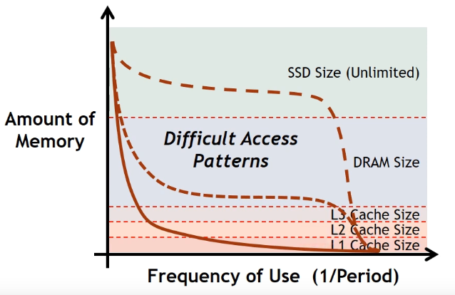
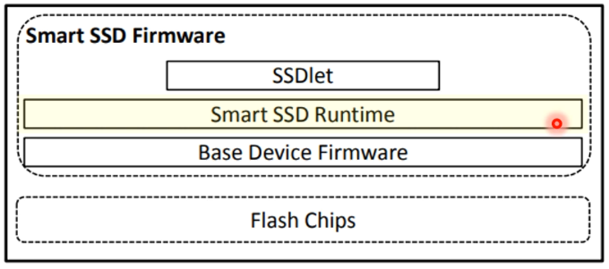
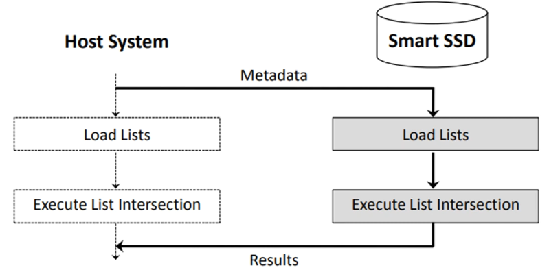
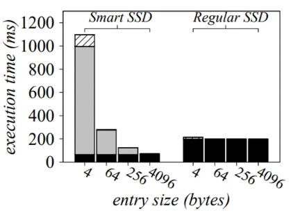
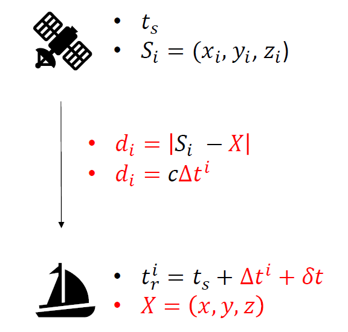
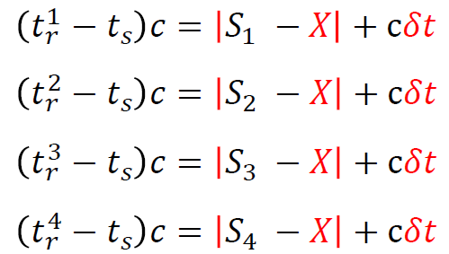
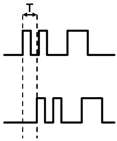
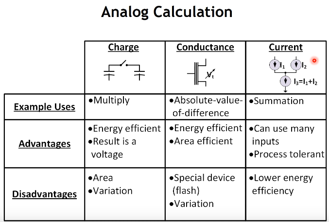
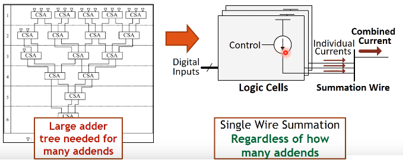

Sometimes it is better to create additional compute at the memory than to move data from the memory to the main compute
Here better refers to faster/more efficient.
Consider the standard memory layout
 when we say compute "in-memory" we don't mean computing inside L1, since that is already part of the CPU. But we would compute
inside the L2, L3, DRAM, and so forth.
when we say compute "in-memory" we don't mean computing inside L1, since that is already part of the CPU. But we would compute
inside the L2, L3, DRAM, and so forth.
The current memory structure and replacement policy are built on the assumptions of
- Temporal locality: If at one point a particular memory location is referenced, then it is likely the same location will be referenced again the near future.
- Spatial locality: If a particular storage location is referenced at a particular time, then it is likely that nearby memory locations will be referenced in the near future.
A typical access pattern is the following. The working set of the process (memory accessed by process frequently) typically resides in the cache. 
However, some applications are more memory-intensive (e.g. cycle through a large amount of memory) and require the following access pattern: 
However, compute in-memory is not a one-fits-all type of problem (like student housing in Zurich, where it is assumed every student tolerates rowdy partying until 5 AM). For applications that don't occupy 90% or more of the total system runtime, then there will be no 10x speedup. Additionally, for apps with a small working set, it will be very difficult to get an improvement over the traditional architecture.
Samsung case study: compute in-SSD (accelerator) list intersection
Modern SSDs have high internal bandwidth than the host interface bandwidth, making them useful for in-memory compute since it is faster to move data inside the SSD than it is to move data across the SSD-host interface. The algorithm is run inside a dedicated firmware layer: 
The host system sends only metadata to the smart SSD such as addresses and length of lists, where the load lists are stored in the SSD: 
For entry sizes above 256 bytes, the smart SSD outperforms the regular SSD and is more energy efficient for entry sizes 64 bytes and beyond. As seen from the following graph, if the total list size is very small, copying data to SSD becomes too expensive relative to doing the computation in cache.  In conclusion, for large uniformly-accessed work loads (wide-access pattern), in-memory SSD is definitely better.
Case study: Self-calibrating GPS accelerator using analog calculation
GPS localization relies on an algorithm called triangulation, which states that given you know your location from 3 2D points you can calculate your position as the intersection of three circles. This principles generalizes to 3D space with more points and using spheres:  We must solve these four equations (in 4 scalar unknowns) to get the location:  however in order to estimate the time of arrival the receiver must match its reference preamble (think of it as a header that's always constant) signal with the one coming from the satellite:  The timing offset is calculated through correlation by doing thousands of 2-bit vector multiply and thousands of results to accumulate since the pattern is very long and very weak (as it is a spread signal). The distance from the satellite is \(T\cdot c\).  For the GPS, the most expensive functionality is addition so we use current addition. To do 4096 2-bit number additions digitally we need a 15 stage tree and 8168 full adders; however, if done using current, we sum currents only once:  The main drawback of this approach is the noise, however, as the number of inputs increase the noise decreases (similar to bagging, whereby averaging reduces the variance, the "noise" in this analogy). It turns out that for 3-bit quantization (i.e. each RF signal sample is mapped onto a digital 3-bit value), the noise from the analog chain and cell current variation is 10x lower than the quantization error (difference between real and digital signals). We get 340-27000x performance increase, 67x energy efficiency increase, and scalability.